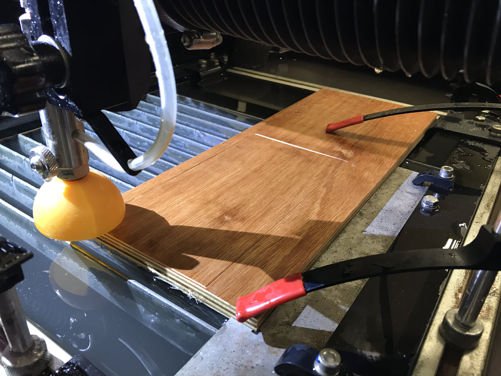
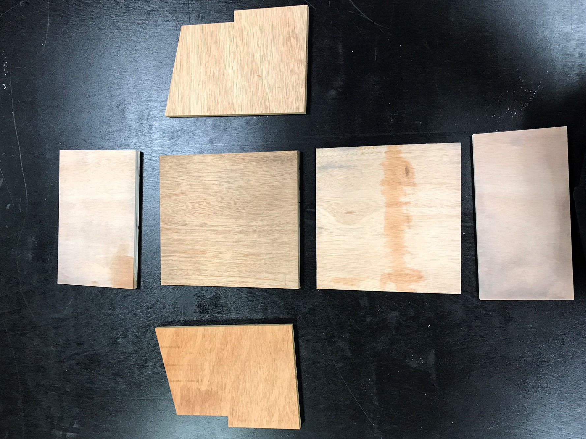
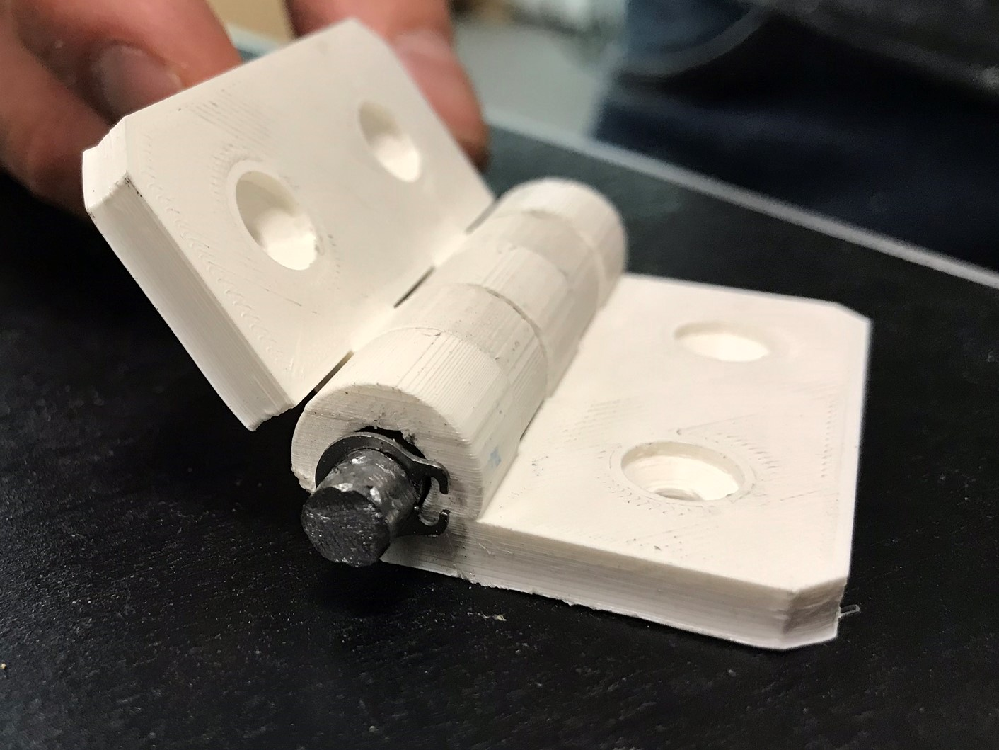
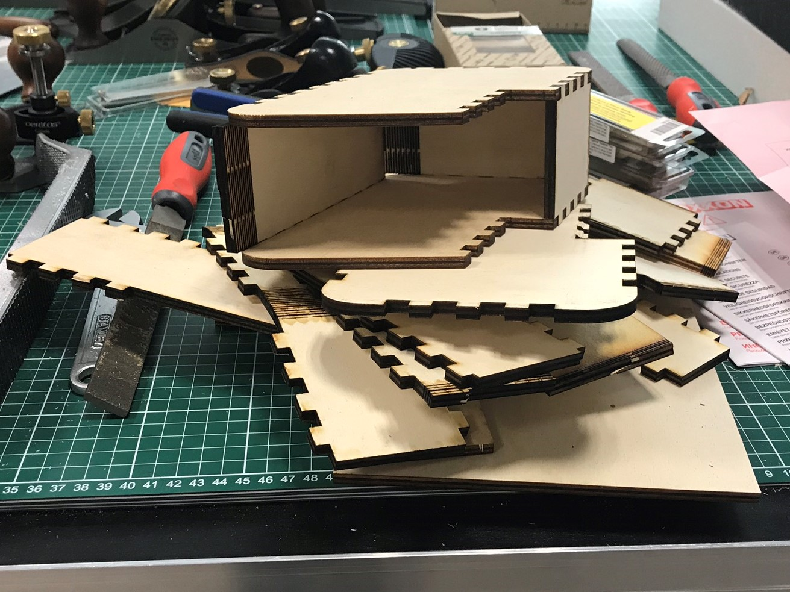

The NYUAD Advanced Manufacturing Workshop supports students and faculty with technical expertise and facilities for product development and creation. As a rapidly developing educational maker space with a broad range of ongoing projects, the AMW needed a place where the voices of those who use the space often could not only be heard, but recorded for review. For my first project in support of the space, then, I designed and manufactured a suggestion and incident report box.
As the first piece that visitors and volunteers see when they enter the AMW, the box reflects the space’s ethos of precision, functionality, and iteration. The structure focuses on the essential functions of card storage, ergonomic writing space, and restricted internal access. Extraneous aesthetics and features were eliminated or minimized. The resulting laser-burned surfaces, exposed finger joints, and living hinges give the impression of a late-stage prototype, a reminder that no project is ever finished.
The highlight of the project was the failure of my initial design. As a learning project designed to familiarize me with the AMW, I initially tried to integrate far too may processes. While I learned how to 3D model, 3D print, and use a waterjet cutter and laser cutter, I ended up with an imprecise, clunky box that did not close. After that frustration, I returned to the research stage focused on developing the core functions. It was an effective lesson in humility, patience, and focus.
   